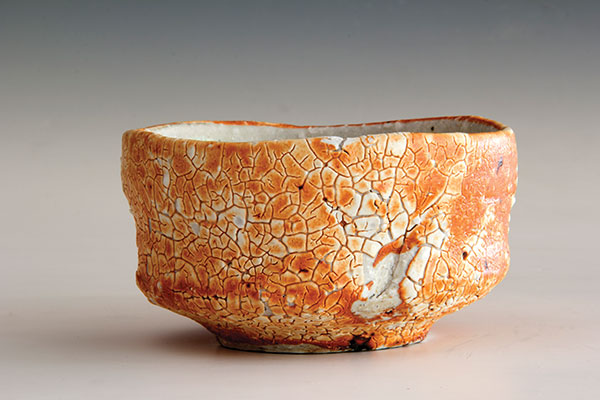
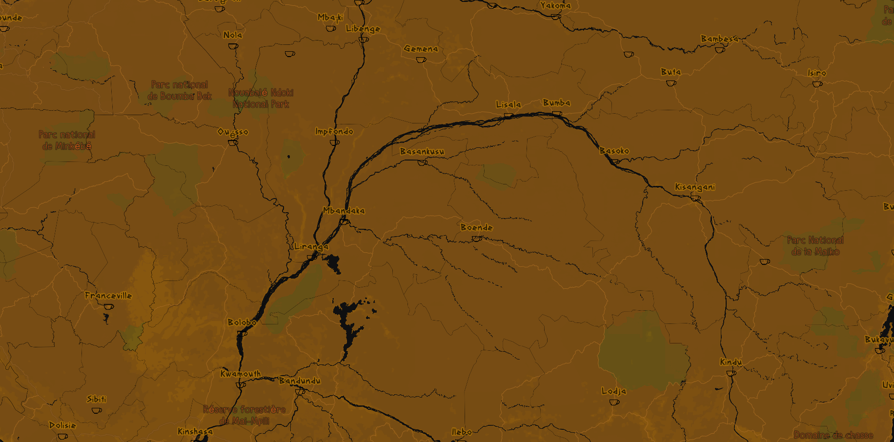

Wood Fired
My style is called Wood Fired and is based on Japanese ceramics.
I drew inspiration from wood and raku fired pottery.
In the map, Teapots represent states and tea cups represent the cities.
The map's detail changes with level of zoom, to mimic the details in a piece's glaze.



Take a look at a few different geographies, focusing on the colors and patterns with how they resemble the surfaces of the pieces. Also pay attention to the rivers with how they resemble the Raku fired vases that used horse hair.
Glacier National Park
Congo River Basin
Lake of the Ozarks
Play around the full map.
Credits:
Map created with Mapbox Studio
Data from openstreetmap